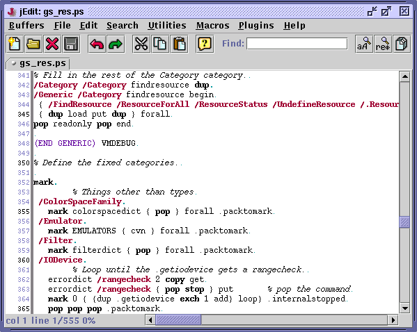

The gutter is a strip on the left side of the text area that displays line numbers. Lines with markers set in them will be drawn with a light green background. Similarly, lines with position registers will have a light yellow background. The gutter is hidden by default; to make it visible, double-click on the thin vertical line at the left of the text area, or select View>Gutter Expanded. To hide the gutter, you can double-click on The View>Line Numbering command can be used to disable line numbering but keep the gutter visible. You might want to do this if you find the line numbers distracting, but still want to see position register and marker locations highlighted.
The gutter can be resized by dragging with the mouse. Resizing can sometimes be necessary if line numbers become too long to be displayed. The View>Save Gutter Size command can be used to save the gutter's size for future sessions.
Many options relating to the gutter (colors, behavior, etc) can be changed in the Utilities>Global Options dialog box; see the section called The Global Options Dialog Box in Chapter 9 for details.
Figure 4-2. A view with the gutter showing
